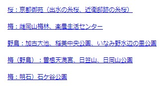

晴歩雨描
晴歩雨描 記事一覧
Leaflet 地図

行先マップ
My GPSログ
My 野鳥図鑑 (GitHub)
My 野鳥図鑑 (さくら)
カレンダー
縦書き印刷
ChatGPT
Bard
鉄道運行情報(Yahoo)
バスマップ
気象庁時系列予報
気象庁天気予報
雨雲レーダーtenki.jp
雨雲レーダー60時間
キキクル
河川水位情報(Yahoo)
地震情報(Yahoo)
ハザードマップ
黄砂情報（気象庁）
山の天気
高原・山の天気
夜空のカレンダー
みらい翻訳
DeepL翻訳
ふりがな文庫
用例.jp
世界の国旗
サクラチェッカー
大サイズ印刷(地図)
HTML カラーチャート
HTML Color Picker
Myアート (さくら)
Myアート (GitHub)
神戸散歩（１）
神戸散歩（２）
大阪散歩（１）
大阪散歩（２）
京都散歩
写真をアートっぽく
写真記事一覧
写真ノウハウ記事
Leaflet地図 リスト